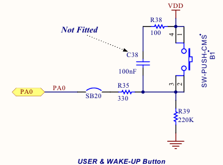

Роемся в даташите на плату (STM32F407VGT6 DISCOVERY) и находим, что пользовательские LED подключаются сл. образом:
• User LD3: orange LED is a user LED connected to the I/O PD13 of the STM32F407VGT6.
• User LD4: green LED is a user LED connected to the I/O PD12 of the STM32F407VGT6.
• User LD5: red LED is a user LED connected to the I/O PD14 of the STM32F407VGT6.
• User LD6: blue LED is a user LED connected to the I/O PD15 of the STM32F407VGT6.
#include "stm32f4xx.h"
int main() {
RCC->AHB1ENR |= RCC_AHB1ENR_GPIODEN; //set clocking for Port D (user LED)
GPIOD->MODER = 0x55000000; //conf pins 12..15 for output
GPIOD->OTYPER = 0; //output with Pull-Up
GPIOD->OSPEEDR = 0;
GPIOD->ODR = 0xF000;
while(1)
{
GPIOD->ODR = 0xF000;
}
// return 0;
}
Изначально все порты отключены от тактирования.
В референс мануале на STM32F407 находим бит GPIODEN, который находится в регистре RCC_AHB1ENR. Для включения тактирования этот бит необходимо выставить в 1:
RCC->AHB1ENR |= RCC_AHB1ENR_GPIODEN; //включили тактирование
В регистр MODER (раздел 8.4) записываются соответствующие биты для переключения пинов в выходное состояние. По 2 бита на каждый пин:
00: Input (reset state)
01: General purpose output mode
10: Alternate function mode
11: Analog mode
Было выбрано 01 для каждого пина. На 4 светодиода это получилось 01010101, что в НЕХ соответствует 0х55. Остальные биты записываем 0.
Регистр OTYPER определяет тип выходного режима.
OTy: Port x configuration bits (y = 0..15)
0: Output push-pull (reset state)
1: Output open-drain
Весь регистр инициализируем 0, чтобы получить выход с подтягиванием.
OSPEEDR отвечает за скорость.
OSPEEDRy[1:0]: Port x configuration bits (y = 0..15)
00: Low speed
01: Medium speed
10: High speed
11: Very high speed
Note: Refer to the product datasheets for the values of OSPEEDRy bits versus VDD range and external load.
ODR определяет уровень напряжения на выходе.
Попробуем задействовать кнопку, которая переключает светодиоды в разные режимы работы.

Как видно на схеме из мануала к плате, кнопка подключается к пину 0 порта А. Если кнопка не нажата, то пин замкнут на землю. При нажатии - к + питания. Поэтому внутренняя подтяжка здесь не нужна.
Получается, что настраиваем только пин порта на вход и включаем тактирование. Подтяжка выключена по дефолту.
RCC->AHB1ENR |= RCC_AHB1ENR_GPIOAEN; //set clocking for port A
GPIOA->MODER &= ~(1 << 0); //set output mode for PA0 only;
Закоментированный блок кода в середине цикла while - вариант с устранением дребезка контактов.
#include "stm32f4xx.h"
int main() {
//For LED
RCC->AHB1ENR |= RCC_AHB1ENR_GPIODEN; //set clocking for Port D (user LED)
GPIOD->MODER = 0x55000000; //conf pins 12..15 for output
GPIOD->OTYPER = 0; //output with Pull-Up
GPIOD->OSPEEDR = 0;
GPIOD->ODR = 0xF000; //pins 12,13,14,15
//For User Button (PA0)
RCC->AHB1ENR |= RCC_AHB1ENR_GPIOAEN; //set clocking for port A
GPIOA->MODER &= ~(1 << 0); //set output mode for PA0 only;
//Variables
uint8_t button_state = 0; //1 - button was pressed, 0 - not
uint8_t led_state = 1; //
while(1)
{
uint32_t button_check = 0; //
button_check = GPIOA->IDR & 0x00000001;
/*/////////////////////////////////////////
if(button_check){
uint8_t button_delay = 50;
if(button_state < button_delay){
++button_state;
}
if(button_state == button_delay){
++button_state;
led_state ^= (1 << 0);
}
}
else button_state = 0;
*//////////////////////////////////////////
if(button_check && !button_state){
button_state = 1;
led_state ^= (1 << 0);
}
else if(!button_check) button_state = 0;
GPIOD->ODR = 0xF000;
if(led_state){
GPIOD->ODR = 0x0000;
}
}
// return 0;
}